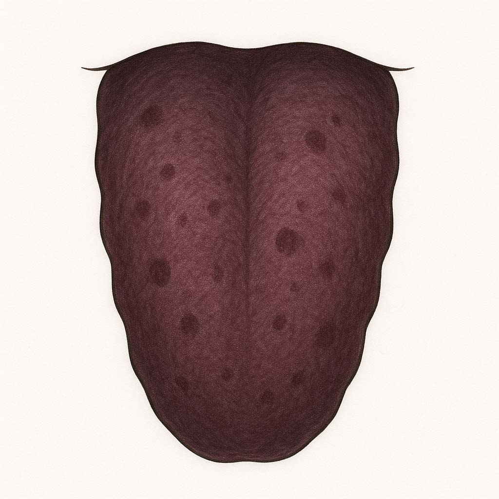

血瘀タイプ
体質 血瘀タイプ
血の巡りが悪く滞りがちな「血瘀タイプ」
冷えやストレス、加齢などによって血の流れが悪くなっているタイプ。
体質の説明、主な特徴
皮膚や粘膜の色が暗くくすんだ感じ。顔色もどんより。
唇の色や歯ぐきの色が暗紫色をしていることも。
シミ・そばかす・クマができやすく、肩こり・頭痛・冷えのぼせも特徴です。
なりやすい不調・病態（からだとこころ）
不妊症、生理痛、子宮筋腫、子宮内膜症、更年期障害、冷えのぼせ、肩こり、頭痛、痔、静脈瘤、肌荒れ、しみ、あざ、慢性関節リウマチ、脳血栓、脳梗塞、心筋梗塞など。
舌の特徴（正常との比較）
正常な舌（画像）

血瘀の舌（画像）
他の体質との関連
血の流れが悪い状態が長く続くと、瘀血が固まり「血瘀」になります。
脾虚や腎陽虚が原因で血が作られず、血虚と併発することも。
養生ポイント
血の巡りをよくするには、まず冷えを改善し、運動で巡らせるのが大切です。
過労・夜更かし・ストレスを避け、入浴やマッサージ、ストレッチで巡らせましょう。
薬膳施治
活血化瘀（かっけつけつお）
血の巡りを促進し、瘀血を取り除く。
おすすめの食材
- 気血巡茶
- 崑崙雪菊茶
- 香麗茉莉花茶
- 茉莉花茶（ジャスミン茶）
- 理気明目茶
- 五望茶
- 食べる薬膳茶（意棗紅豆茶）
- 紅花
- 金針菜
- 黒きくらげ
- 白きくらげ
- はと麦
- 緑豆
- 山査子（サンザシ）
- 松の実
- いろいろお豆のスィーツセット
- スッキリさっぱり乃湯
注意するもの
過剰な脂質・糖質の摂取、喫煙、過度な飲酒は避ける。
摂ると良い四気・五味・帰経食材
性：温性・平性 味：辛味・苦味・甘味 帰経：心・肝・脾・胃・腎
国際中医師からのアドバイス
瘀血は時間とともに蓄積されます。体質の変化はゆるやかでも、毎日の積み重ねが大切です。
生活習慣を見直し、身体を温めること、適度な運動、バランスのとれた食事が血の巡りを整える第一歩です。